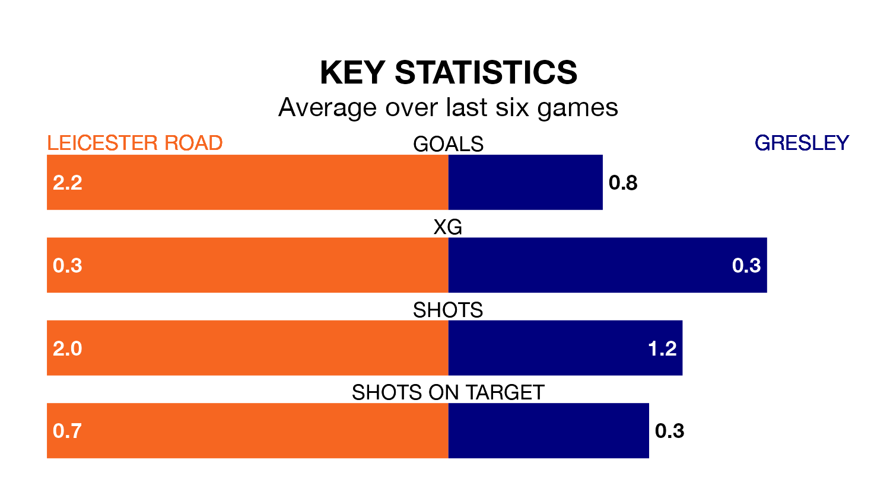

Struggling Gresley face Leicester Road away on Saturday looking to build on a win in their last league outing.
After securing all three points with a 1-0 victory over Lye Town on April 6, Gresley sit 19th in the Northern Premier League Division One Midlands.
They travel to play a Leicester Road side fourth in the standings, who also won their last match, 5-3 against Coleshill Town.
With 33 goals in 34 games so far this season, Gresley are the league's joint-third-lowest scorers with 1.0 goals per game. And they are conceding more than average, letting in 85 goals at a rate of 2.5 per game.
Leicester Road, meanwhile, are above average scorers, with 1.7 goals per game, compared to a league average of 1.6. They have conceded 1.3 goals per game.
The hosts are in reasonable form in the Northern Premier League Division One Midlands, with three wins and two draws from their last six games.
With a win and two draws over that period, the away team's form is much worse – they have taken five points from 18, compared to Leicester Road's 11.
In the last three years, Leicester Road and Gresley have played each other on three occasions. Leicester Road won one of them and they drew the other.
Their last meeting was on December 12, when they played out a 0-0 draw.
Updated: 10:01 (UTC), 12/04/24